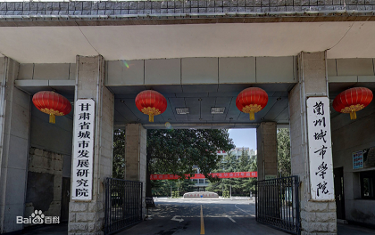
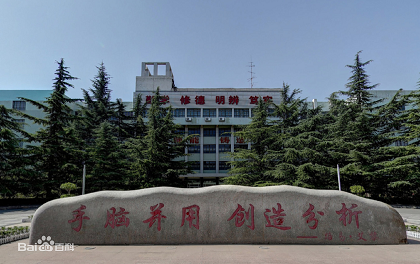

Get to know
MY SCHOOL
初中时就读于山西省朔州市开发区元博中学
根据塔什干市工人代表委员会执行委员会第596号决定，第238中学的创建日期为1976年8月31日。 1976年9月1日，我校首次向学生敞开大门。 45年卓有成效的活动，1600多名学生获得中等普通教育证书，其中43人获得奖牌。 我校团队精心保存和发扬238中学存在前几个时期建立和发展的传统。同时，我们创造新的传统，例如学童年度研究会议“发现青年”、科学日、项目节、学员誓言已经成为传统...... 我们学校的骄傲是军校学生运动，这一学年已经满22岁了。 我校学生历来参加区、市、区学科奥林匹克竞赛和竞赛，成绩优异。 学员是各种军事爱国比赛的常规获奖者和获奖者。 238 号中学是市教育系统中的一个环节，它确保居住在本市的儿童接受小学普通教育、普通基础教育和普通中等教育的宪法权利得到落实。 学校还为儿童提供广泛的额外教育计划。 学校队伍不仅由捷尔任斯基区指定小区的孩子组成，而且还来自该市其他五个区。
高中就读于山西省朔州市朔城区第一中学
我高中时就读于乌兹别克斯坦塔什干市开发区医学院的中学。 塔什干中医学院开发区位于塔什干开发区，是一所以中学为投资主体，教师参股的民办学校。学校位于新奇拉扎尔区，塔什干开发区，紧邻市区，交通四通八达。占地面积250亩，建筑面积近23万平方米，总投资4300万美元。一期工程将建设14.5万平方米的教育楼、公寓楼和餐厅，投资2.1亿美元。 学校的使命是教育和服务并重，不让学生掉队。注意情感的培养、欣赏的培养、挫折的培养。平等对待所有学生。大力推进课堂改革，培养学生自学、自控、自护的能力。开放足子对象开辟了丰富多彩的活动，给不同层次的学生一个证明自己的机会和一个发展的平台，让学生健康学习成长。我们努力培养教师之间的协作精神。塔什干医学院和中学采用统一营养、统一考核、相互竞争、比较学习。尝试克服海军战术问题。严格控制班级容量。领导来自第七高中，比奇兰扎尔高中的医学院还要好。
兰州城市学院
 大学就读于兰州城市学院
兰州城市学院（Lanzhou City University）位于甘肃省会兰州，成立于2006年，是应用技术大学（学院）联盟、甘肃高校教师教育联盟、安宁五所高校战略联盟、全国石油高校协作会议、，CDIO工程教育联盟成员单位，甘肃省首批应用技术大学试点高校，由华东师范大学对口支援。
学校前身是始建于1958年6月的兰州师范高等专科学校和新西兰友人路易·艾黎于1942年5月创办的培黎石油学校。2006年2月经教育部批准设置为省属全日制普通本科院校。2007年8月，经甘肃省政府批准，甘肃省幼儿师范学校整体并入学校。 截至2020年9月，学校有校本部、培黎、东校区三个校区占地50.54万平方米，下设18个二级院系、60个本科专业；拥有省级重点学科2个；省级特色专业8个；教职工近1167人